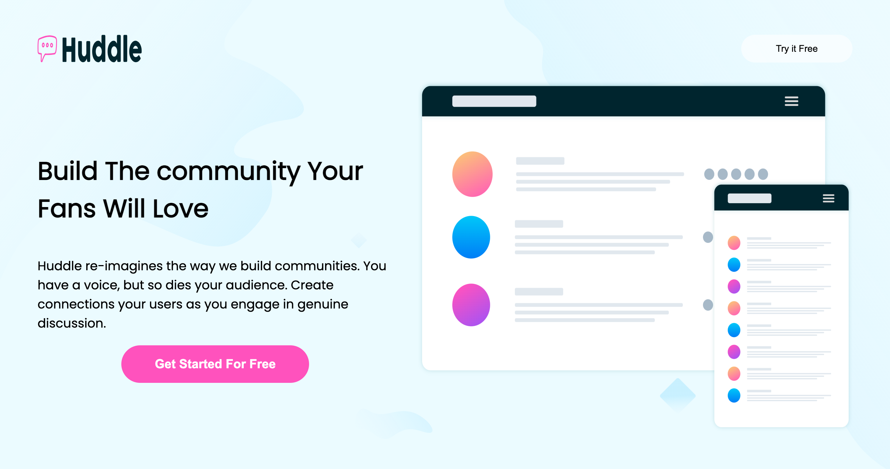
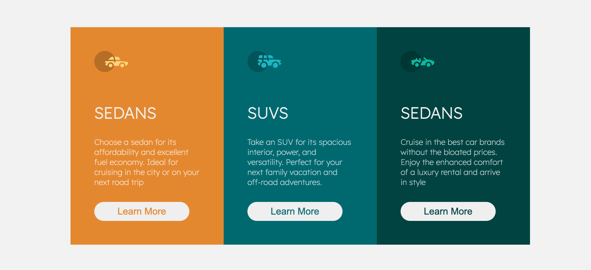
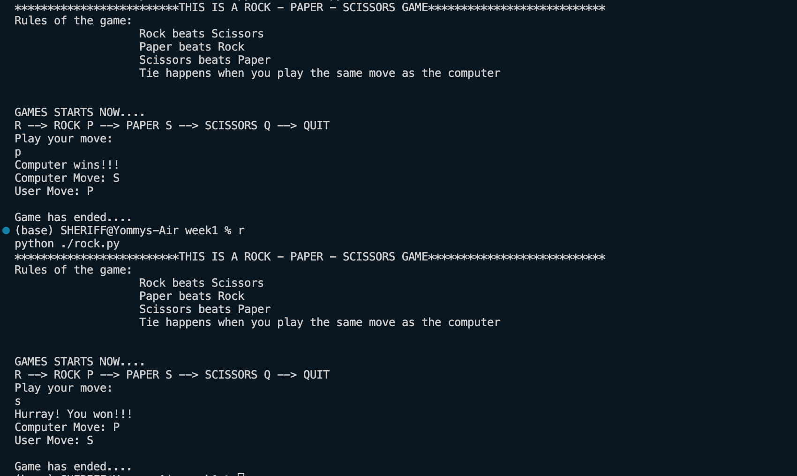

A highly responsive and interactive Login page. It adjust to screen sizes and essentially displays error message if you enter unexpected input. It is written in html, css and Js
 Click here to view
Click here to view
A Huddle page which flexes interestingly when you adjust the width of the screen. It is laced with a good touch of animation and visually appealing in its entirety
 Click here to viewA demonstration of a Grid and Flexbox system. The two pages are well linked together for visualization at a go.
 Click here to viewA robust rock-paper-scissor game which simulates the game as is. It is a CLI application written in python.
 Click here to view